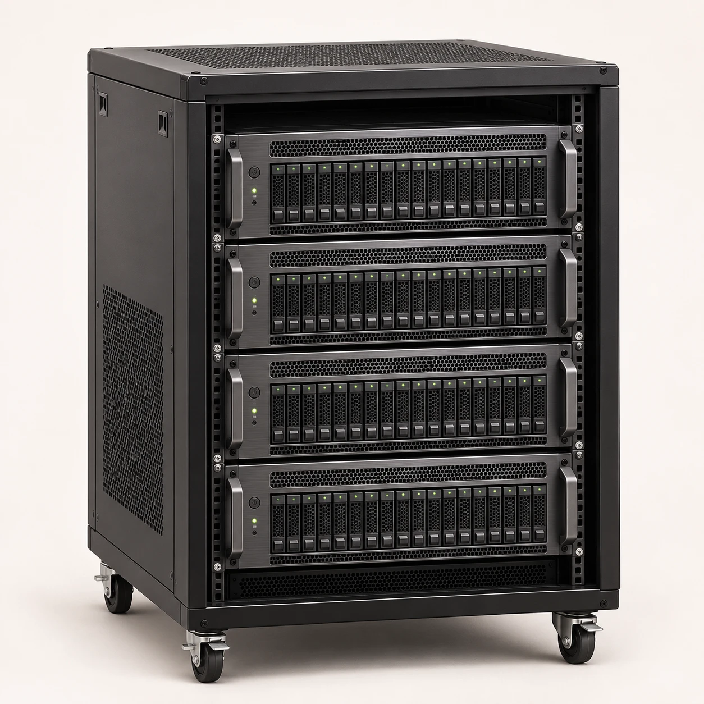
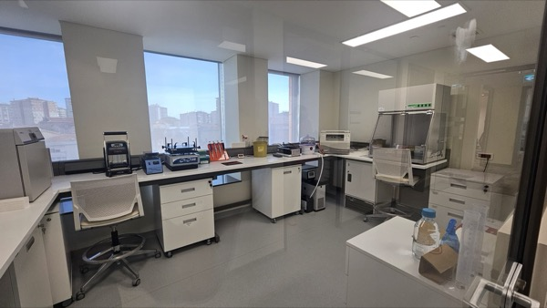

Kısa okuma analizleri
Panel, ekzom ve tüm genom dizileme verilerinin işlenmesi; varyantların filtrelenmesi, yorumlanması ve raporlanması.
Analiz ve raporlama, kurum içi hesaplama altyapısı, longevity laboratuvar hizmetleri veya eğitim. İhtiyacınıza uygun hizmeti örnekleriniz, verileriniz ve çalışma amacınız üzerinden birlikte belirleyelim.
Dizileme veriniz var; işlenmesini, yorumlanmasını ve raporlanmasını istiyorsunuz.
Short-read ve long-read verileri için Gennext.Analizleri kendi kurumunuzun altyapısında yürütmek istiyorsunuz.
İş yükünüze göre yapılandırılan Worker Node.Genetik ve epigenetik değerlendirmeler için laboratuvar çalışmasına ihtiyaç duyuyorsunuz.
Microarray ve Nanopore uzun okuma dizileme.Varyant değerlendirme ve platform kullanımı konusunda bilgi edinmek istiyorsunuz.
Tıbbi genomik eğitimleri ve video kaynakları.01 / GENNEXT
Kısa okuma (short-read) ve uzun okuma (long-read) dizileme verilerini kalite kontrolden varyant değerlendirmeye ve raporlamaya kadar analiz ediyoruz. Gennext Clinical, somatik ve kalıtsal hastalık analizlerine; Gennext Longevity ise genetik ve epigenetik bulguların sağlıklı yaşam hizmetlerinde değerlendirilmesine odaklanır.

Longevity raporları kişiselleştirilmiş sağlık danışmanlığını destekler; tanı testi değildir.
02 / WORKER NODE
Worker Node, genomik analiz görevlerini kurum içinde yürüten hesaplama birimidir. Kapasite ve kurulum planı, veri hacmi, eş zamanlı analiz ihtiyacı ve mevcut altyapı dikkate alınarak belirlenir.

Kurum içi analiz istasyonu

Yoğun ve eş zamanlı analiz iş yükleri için
Kullanıcı erişimi · Görev atama · İşlem durumu
Analiz görevi ve durum bilgisi
KURUMUN YEREL ALTYAPISI
KURUMUN YEREL ALTYAPISI
KURUMUN YEREL ALTYAPISI
Genomik girdiler ve analiz çıktıları atanmış yerel altyapıda işlenir. Merkezi hizmetler, kullanıcı erişimini ve analiz görevlerini koordine eder.
LONGEVITY LABORATUVARI
Kendi laboratuvarımızda microarray ve uzun okuma dizileme çalışmaları yürütüyoruz. Bu altyapıyı longevity hizmetlerimizin genetik ve epigenetik değerlendirmelerinde kullanıyoruz.

MICROARRAY
Genotipleme ve DNA metilasyonu çalışmalarıyla genetik yatkınlık ve epigenetik değerlendirmelere veri sağlıyoruz.
LONG-READ
Nanopore teknolojisiyle uzun DNA parçalarını diziliyor, elde edilen verileri çalışmanın amacına uygun analiz ediyoruz.
04 / Eğitim
Tıbbi genomik eğitimlerimiz, varyant yorumlama ve önceliklendirme konularını ele alır. Eğitim kapsamı ve katılım bilgileri için bizimle iletişime geçebilirsiniz.
GENNEXT
Platformu tanıtım videomuzda keşfedin. Kullanım eğitimleri ve analiz iş akışları için Gennext Community kanalımızı ziyaret edin.
Yazılım, altyapı ve eğitim ihtiyaçlarınızı konuşalım.